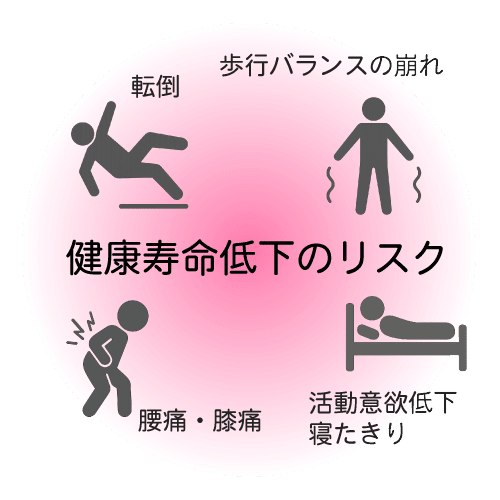

Footomoの訪問フットケア
高齢者の「足元」から健康と安心を支える
多くのグループホームや在宅療養中の高齢者は、足の爪や皮膚に様々なトラブルを抱えています。 巻き爪、変形爪、肥厚爪（厚い爪）といった爪の異常や、タコ・魚の目、かかとの乾燥やひび割れなど、足の状態は生活の質や健康に深く関わっています。
Footomoでは、こうした足のトラブルに対し、看護師がご自宅や施設へ訪問し、専門的なフットケアを提供しています。
提供サービス
- 手足の爪切り（変形爪・厚い爪への対応）
- 巻き爪ケア・矯正
- タコ・魚の目の除去
- かかとの角質ケア
- アロマオイルを使用したトリートメント 等
すべての施術は、医療的知識を持つ看護師が衛生管理のもと丁寧に対応いたします。
なぜフットケアが必要なのか？
足のトラブルを放置すると、「歩行バランスの崩れ」や「転倒リスクの増加」「腰痛・膝痛」などを引き起こしやすく、 やがて寝たきりや活動意欲の低下にもつながります。
定期的なケアにより、快適な歩行を維持し、健康寿命を延ばすことが期待できます。
訪問フットケアグループ Footomo